70-second animated video. Knee-high, big-headed grown men in a normal-sized San Fernando Valley, with faded 80s neon gone 2002–2006 grunge and VHS grain.
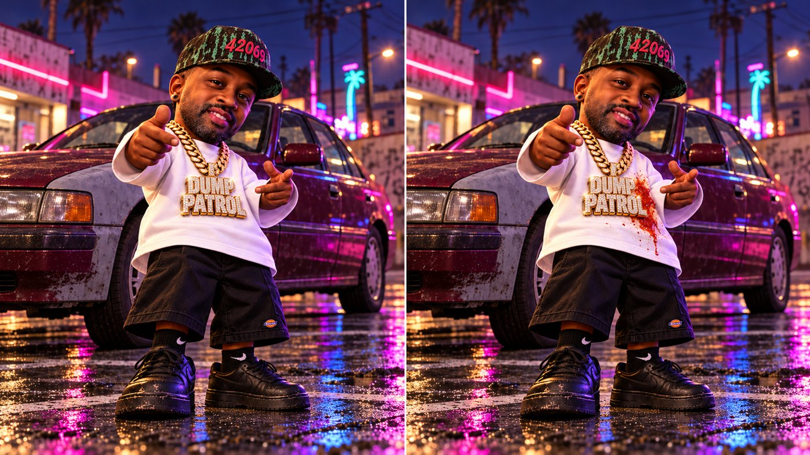
Trae · white tee, black Dickies, “42069” snapback, gold DUMP / PATROL chain
The squad · Big Rob (hoodie, beanie), Nate (red flannel), Dre (braids, jersey)
Knapp West · powder-blue tees, white bucket hats
The car · faded burgundy early-90s Accord, primer-grey fender
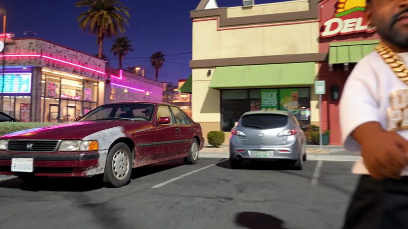
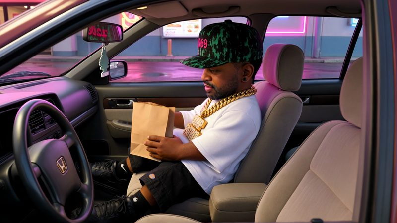
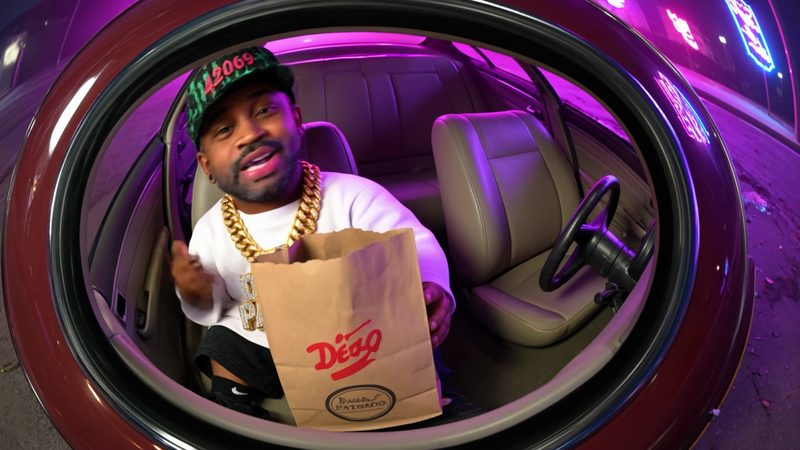
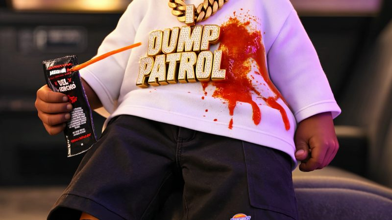
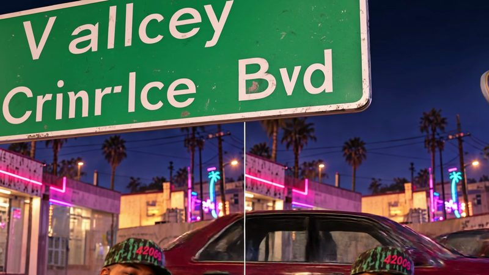
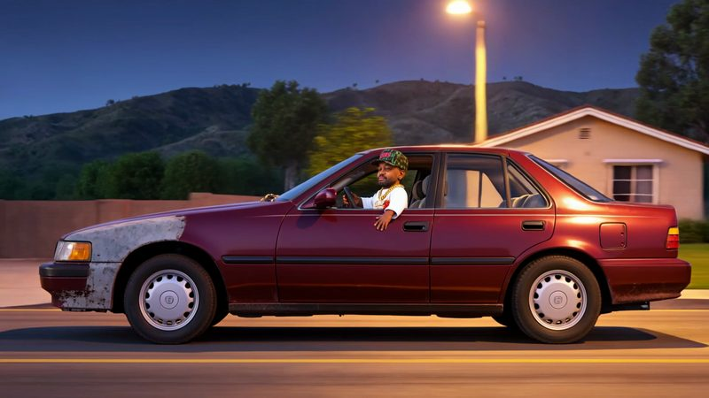
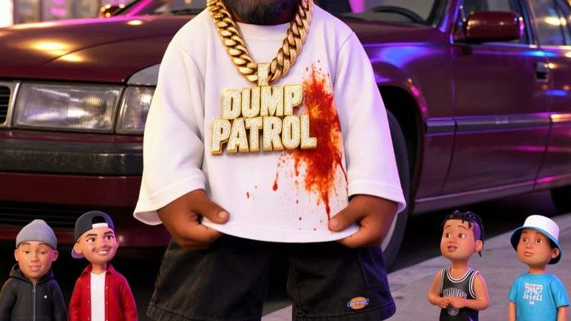
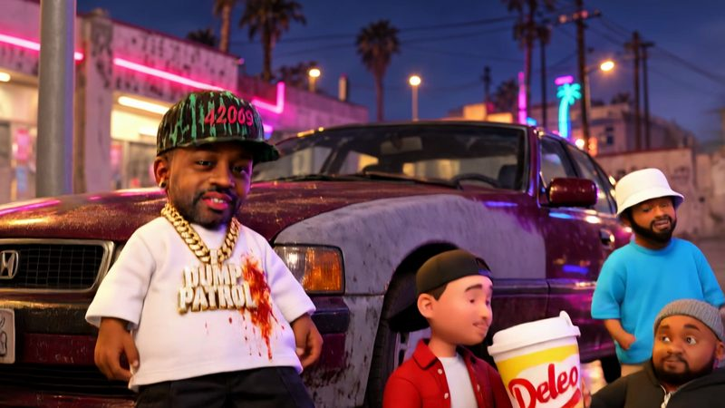
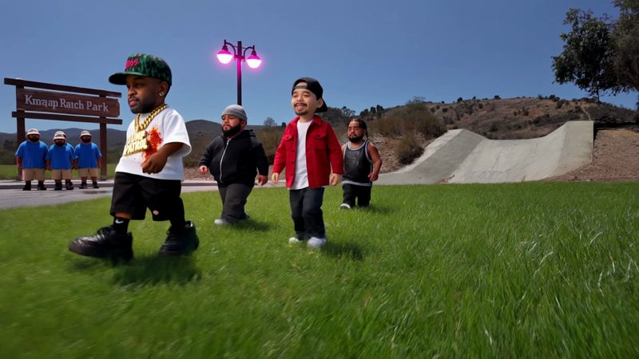
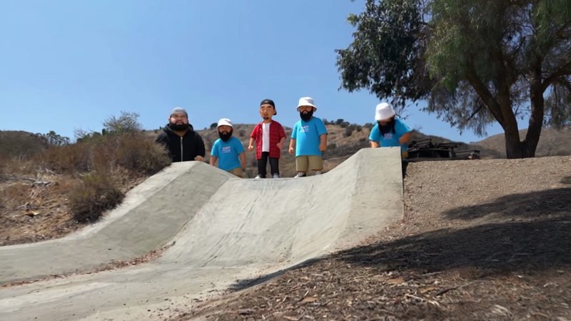
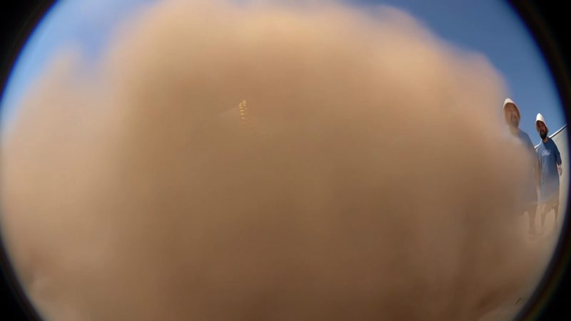
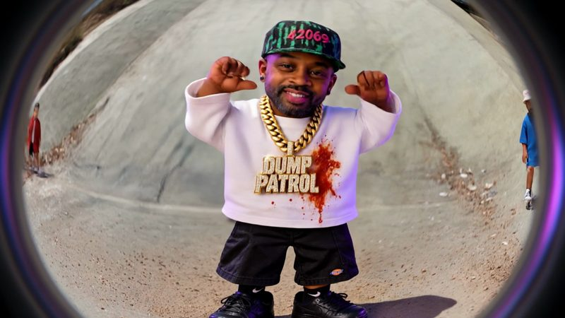
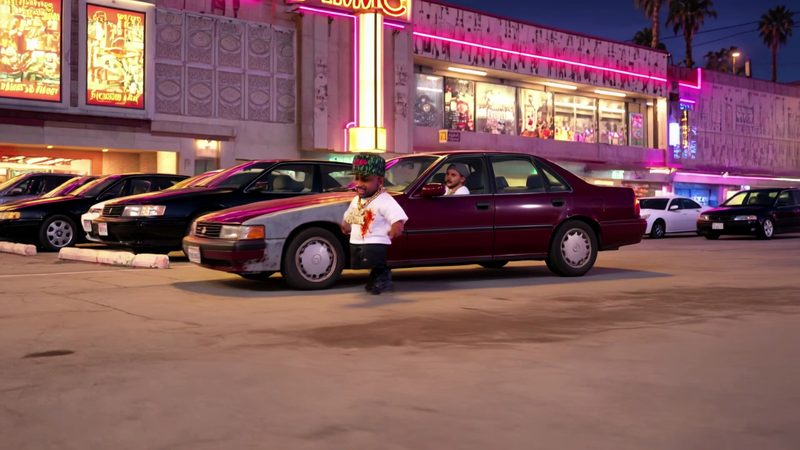
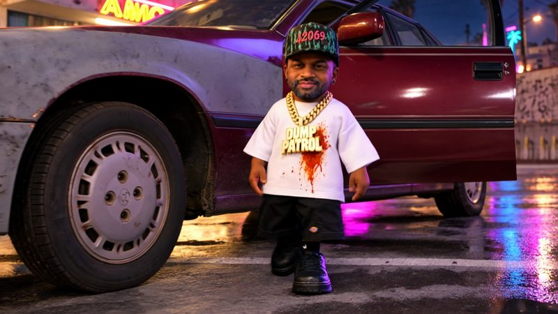
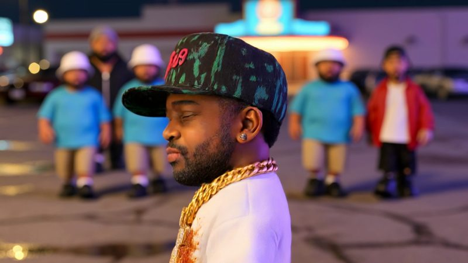
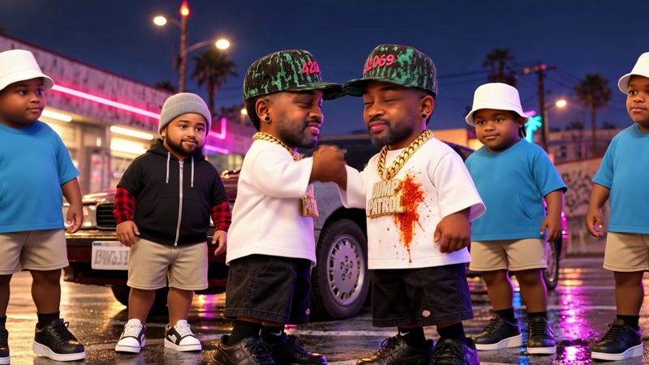
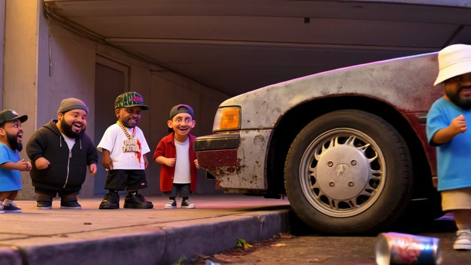
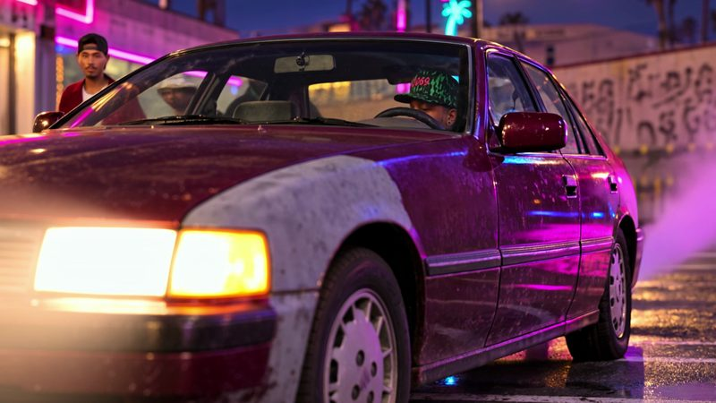
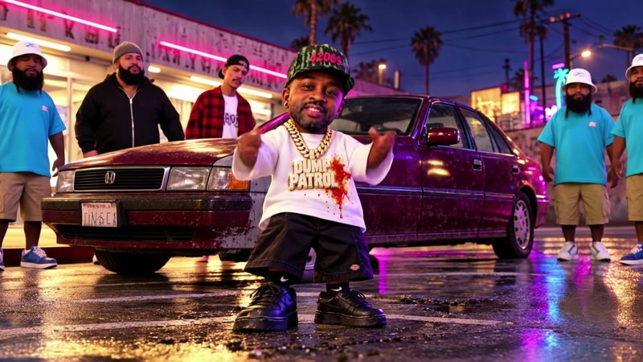
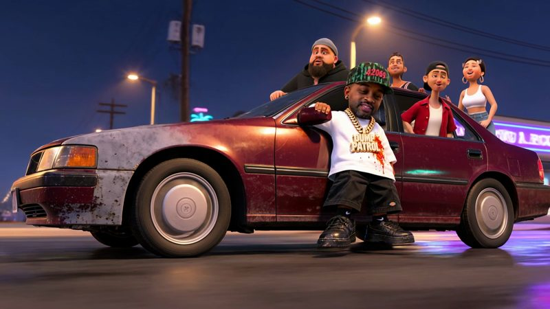
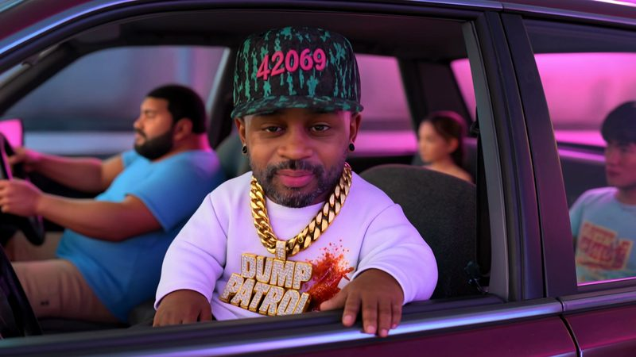
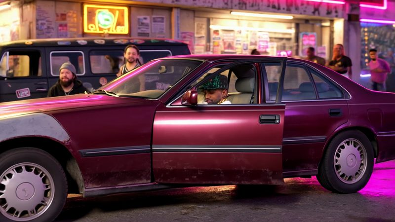
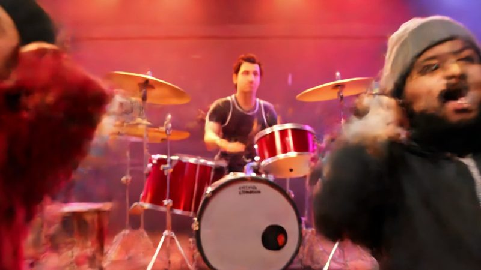
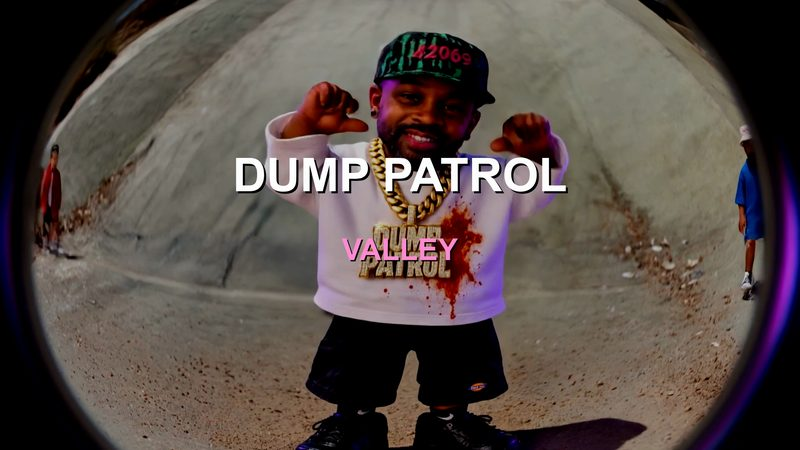